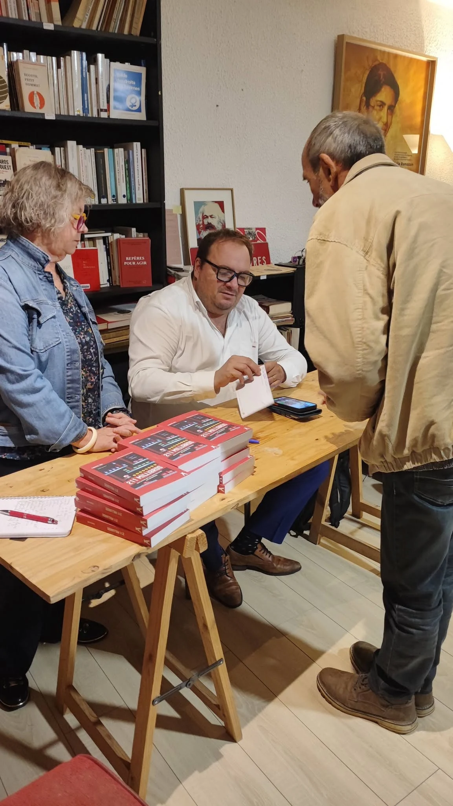
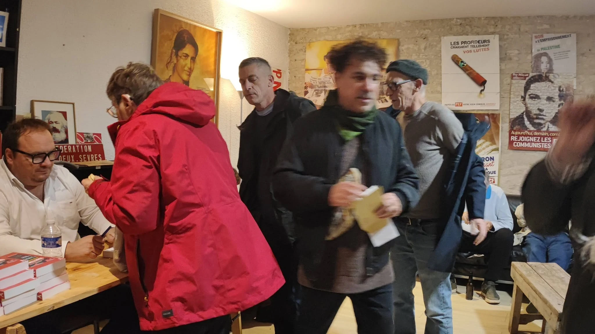
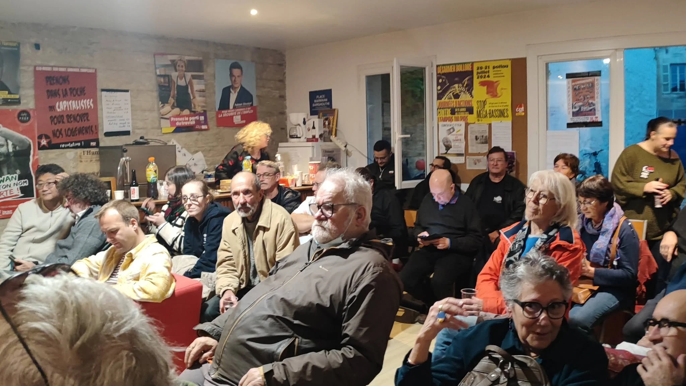
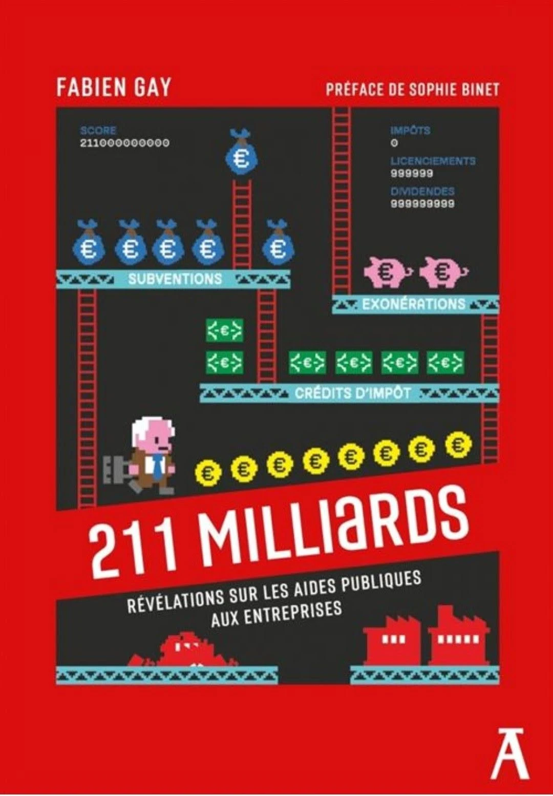
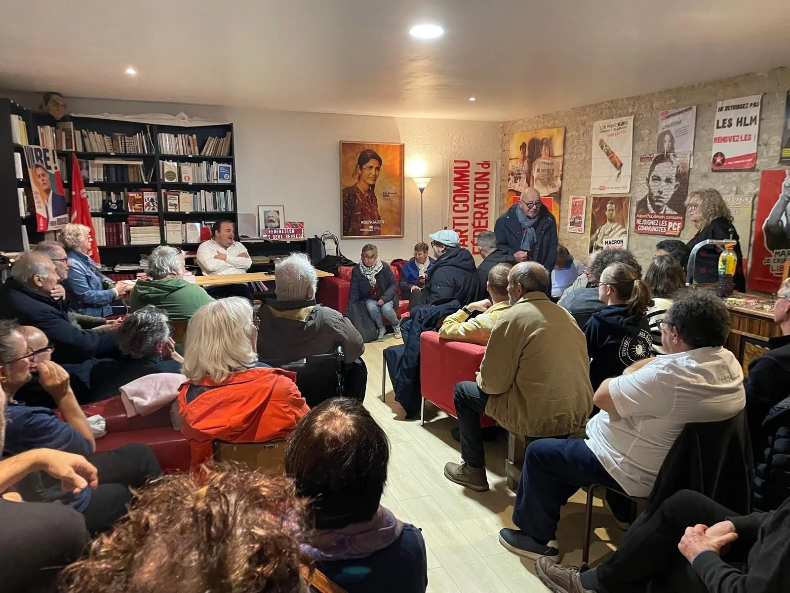
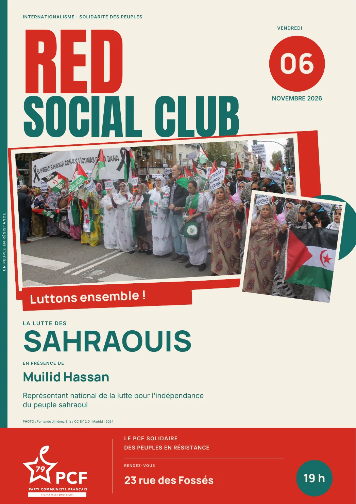

Rencontre · 17 novembre 2026
À Niort, nous avons débattu des aides publiques avec Fabien Gay
Le 17 novembre, nous avons accueilli Fabien Gay, sénateur communiste et directeur de L’Humanité, pour un débat suivi d’une dédicace.
Fédération des Deux-Sèvres
Parti communiste français
Niort · Rencontre du 17 novembre
Le 17 novembre, nous avons accueilli Fabien Gay, sénateur communiste et directeur de L’Humanité, pour un débat suivi d’une dédicace.
Lire la rencontre ↗Novembre 2026
Rencontre · 17 novembre 2026
Le 17 novembre, nous avons accueilli Fabien Gay, sénateur communiste et directeur de L’Humanité, pour un débat suivi d’une dédicace.
Mobilisation · 14 novembre 2026
Le samedi 14 novembre, nos camarades de Thouars se sont mobilisés et ont manifesté pour défendre le niveau de vie.
Mobilisation · 17 novembre 2026
Pour défendre nos services publics et la rémunération de leurs agents, nous avons appelé à manifester le 17 novembre à Niort, Thouars et Bressuire.
Mémoire · 11 novembre 2026
Le 11 novembre, nous nous sommes rassemblés à Niort à l’initiative de l’ADIRP 79, en mémoire de la manifestation du 11 novembre 1940.
Vie fédérale · 7 novembre 2026
Nous nous sommes réunis en assemblée générale le samedi 7 novembre.
Internationalisme · 6 novembre 2026
Le 6 novembre, nous avons consacré notre Red Social Club à la lutte du peuple sahraoui pour son indépendance.
Internationalisme · 20 novembre 2026
Pour le 20 novembre, nous avions invité Pascal Torre, coprésident de France-Kurdistan, à notre Red Social Club consacré à la lutte des Kurdes.
Niort et Thouars
Rencontre · Compte rendu
Le 17 novembre, nous avons accueilli Fabien Gay, sénateur communiste et directeur de L’Humanité, pour un débat suivi d’une dédicace.
« Et si les 211 milliards d’aides publiques aux entreprises servaient d’abord l’emploi et les salaires ? » C’est la question que nous avons posée dans notre invitation. Nous en avons débattu avec Fabien Gay le 17 novembre, au 23 rue des Fossés à Niort, autour de son livre 211 milliards. Révélations sur les aides publiques aux entreprises.
Fabien Gay était le rapporteur de la commission d’enquête du Sénat. Elle estime qu’au sens large, les aides publiques aux entreprises atteignaient au moins 211 milliards d’euros en 2023. Ce chiffre donne un ordre de grandeur et dépend du périmètre retenu.





Invitation et compte rendu du PCF 79. Rapport de la commission d’enquête du Sénat. Notre invitation au débat et à la dédicace Notre compte rendu du débat et de la dédicace Calcul détaillé de la commission d’enquête du Sénat Le livre aux Éditions de l’Atelier
Mobilisation · Brève
Le samedi 14 novembre, nos camarades de Thouars se sont mobilisés et ont manifesté pour défendre le niveau de vie.
Nous avons porté cette même revendication dans les manifestations de Niort et de Bressuire.
Nous avons aussi appelé à nous rassembler le mardi 17 novembre dans ces trois villes pour défendre les services publics et la rémunération de leurs agents.
Compte rendu du PCF 79.
Mobilisation · Appel archivé
Pour défendre nos services publics et la rémunération de leurs agents, nous avons appelé à manifester le 17 novembre à Niort, Thouars et Bressuire.
Nous donnions rendez-vous à 11 h place de la Brèche à Niort et place Flandre-Dunkerque à Thouars, puis à 14 h place Saint-Jacques à Bressuire.
Cet appel s’inscrivait dans la mobilisation pour augmenter les salaires, défendre les services publics et donner à leurs agents les moyens d’assurer leurs missions.
Appel du PCF 79 et bilan national du PCF. Notre appel et les horaires dans les trois villes Bilan national de la journée
Mémoire · Compte rendu
Le 11 novembre, nous nous sommes rassemblés à Niort à l’initiative de l’ADIRP 79, en mémoire de la manifestation du 11 novembre 1940.
En 1940, des lycéens et des étudiants ont bravé les interdictions et manifesté jusqu’à l’Arc de Triomphe, à Paris. Nous étions rassemblés à Niort 86 ans plus tard pour faire vivre la mémoire de cet acte de résistance.
Notre compte rendu et ses photographies retracent la cérémonie organisée par l’Association des déportés, internés, résistants et patriotes des Deux-Sèvres.
Compte rendu et photographies du PCF 79. Repère historique du ministère des Armées. Notre compte rendu et nos photographies à Niort Annonce de la cérémonie du 11 novembre à 17 h 30 Repère historique du ministère des Armées
Vie fédérale · Brève
Nous nous sommes réunis en assemblée générale le samedi 7 novembre.
Pour échanger avec nous sur la vie de la fédération et nos prochaines réunions, écrivez-nous à dspcf79@orange.fr.
Date et tenue confirmées par le PCF 79.
Internationalisme · Brève
Le 6 novembre, nous avons consacré notre Red Social Club à la lutte du peuple sahraoui pour son indépendance.
Nous avions invité Muilid Hassan, représentant national de la lutte pour l’indépendance du peuple sahraoui. Notre rendez-vous était fixé à 19 h au 23 rue des Fossés, à Niort.
Nous soutenons le droit du peuple sahraoui à décider librement de son avenir. Notre invitation portait cet engagement : « Le PCF solidaire des peuples en résistance. »

Annonce et affiche du Red Social Club. Tenue de la rencontre confirmée par la fédération. Notre annonce du 6 novembre Programme du Red Social Club sur Facebook
Internationalisme · Annonce archivée
Pour le 20 novembre, nous avions invité Pascal Torre, coprésident de France-Kurdistan, à notre Red Social Club consacré à la lutte des Kurdes.
Nous donnions rendez-vous le vendredi 20 novembre à 19 h, au 23 rue des Fossés, à Niort. Notre affiche invitait au débat et à la solidarité avec les peuples en résistance.
La photographie de l’affiche a été prise lors d’une manifestation pour le Rojava à Barcelone, le 25 janvier 2026.

Programme et affiche du Red Social Club du vendredi 20 novembre 2026.